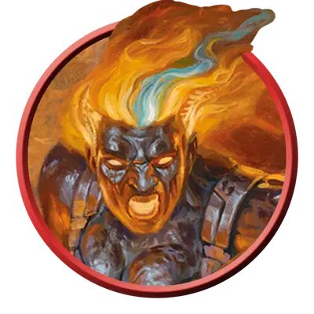

Эйзер страж
Azer Sentinel
Средний Элементаль, Принципиальный Нейтральный

Класс Защиты 17 Инициатива +1 (11)
Хиты 39 (6к8 + 12)
Скорость 30 футов
| мод | спас | ||
|---|---|---|---|
| СИЛ | 17 | +3 | +3 |
| ЛОВ | 12 | +1 | +1 |
| ТЕЛ | 15 | +2 | +4 |
| мод | спас | ||
|---|---|---|---|
| ИНТ | 12 | +1 | +1 |
| МДР | 13 | +1 | +1 |
| ХАР | 10 | +0 | +0 |
Иммунитеты Огонь, Яд; Отравленный
Чувства пассивное Восприятие 11
Языки Первичный (Игнан)
Опасность 2 (450 опыта; БВ +2)
Особенности
Аура огня. В конце каждого хода эйзера каждое существо (по его выбору) в 5-футовой Эманации, исходящей от эйзера, получает 5 (1к10) урона Огнём, если только у него нет состояния Недееспособный.
Свечение. Эйзер излучает Яркий свет в радиусе 10 футов и Тусклый свет ещё на 10 футов.
Действия
Пылающий молот. Бросок рукопашной атаки: +5, досягаемость 5 фт. Попадание: 8 (1к10 + 3) Дробящего урона плюс 3 (1к6) урона Огнём.
Бонус мастерства +2
Среда обитания Горы, Стихийный план Огня
Сокровища Личные, Оружейные
Эйзеры
Огненные кователи из живого металла
Эйзеры — это созданный из живой бронзы народ, что трудятся средь первозданных стихий бытия, выковывая оружие и магические диковины в самых исполинских горнилах и пеклах мультивселенной.
Эйзеры стражи защищают кузнецов своих общин и окутывают оружие собственным пламенем.